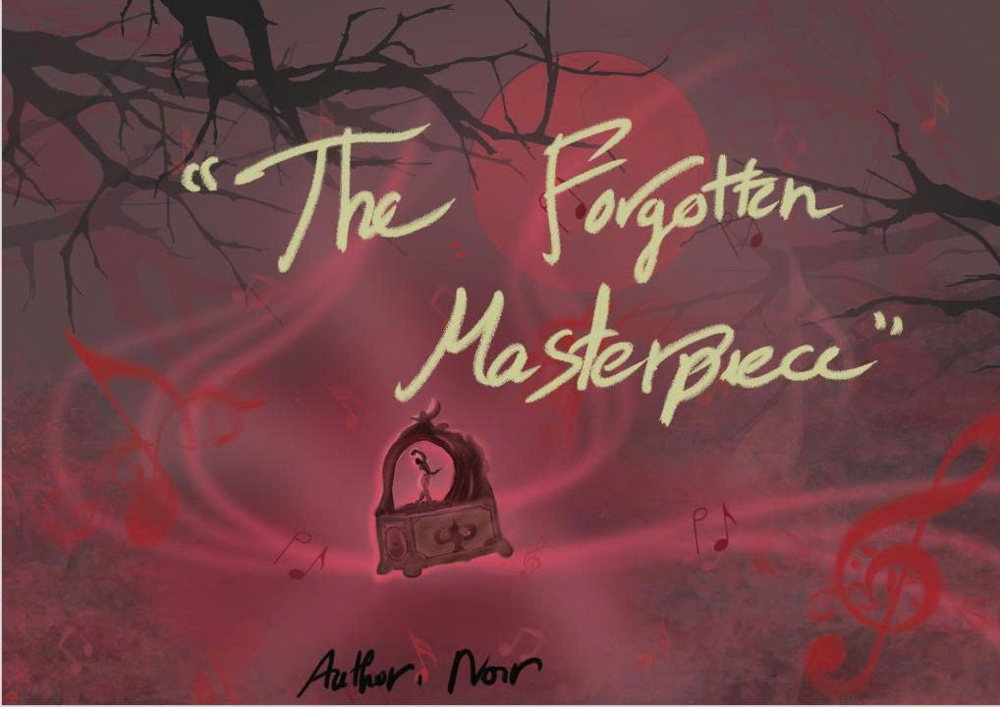
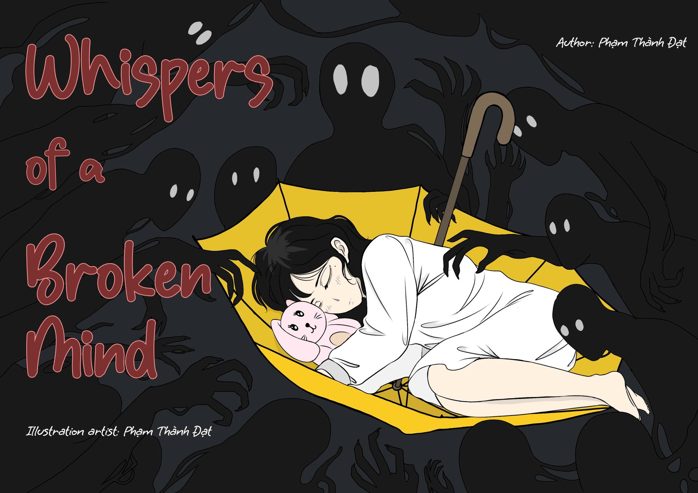

Tủ sách Comics

ISSUE 01 · TRIDENT COMICS
Whispers of a Broken Mind
Giữa ký ức và những tiếng thì thầm.
Bắt đầu đọc
Về tác phẩm
Sau biến cố mất đi người bạn duy nhất, Bình An — cô gái mang chứng tâm thần phân liệt — dần bị cuốn vào khu rừng ma mị phản chiếu nỗi cô độc và tổn thương nội tâm, nơi ranh giới giữa thực tại và ảo giác ngày càng xóa nhòa.
NHÂN VẬT TRUNG TÂM
Bình An & Tiếng vọng ký ức
KHÔNG GIAN & TÔNG MÀU
Rừng sương lam lạnh & Đốm sáng
ĐỊNH DẠNG BẢN GỐC
2560 × 1809 px · Spread A4
Kéo góc trang hoặc dùng phím mũi tênVuốt để lật trang · Chạm hai lần để phóng to
✓ ĐÃ KHÉP LẠI ISSUE 01 (17/17 TRANG)